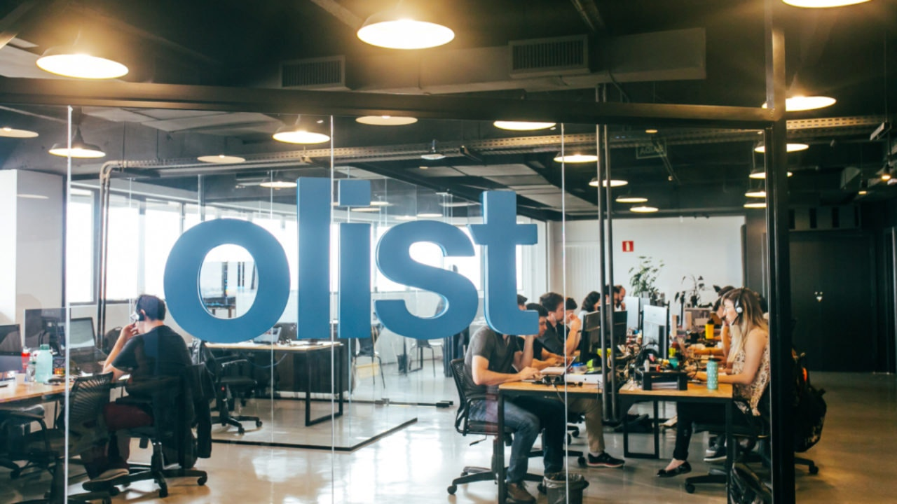

This is a complete BI project from scratch and includes both (OLTP) and OLAP data warehousing.
Olist is an enterprise that engages with multiple merchants for marketing their products online and charges a commission for each product that is ordered.
Project Goal: constructing dashboards that facilitate the analysis of data and assess the performance of sellers via key performance indicators (KPIs).
Project Tools: SQL for data cleaning & exploration and building the OLTP schema, SSIS for data integration and building the data warehouse (OLAP), SSRS for paginated reports, Power BI for dashboards, Tableau for dashboards.

In this project, I built dashboards using Power BI that analyze company data to determine the reasons for employee attrition. Furthermore, I generated random names using MS SQL Server with external data.
Project Tools: Power BI using Power Query for data cleaning and transformation, DAX for measures. Drill-through and filter pages were implemented to improve the charts with additional details and information.

This is a complete BI project from scratch and includes both (OLTP) and OLAP data warehousing.
In this project, we built dashboards that analyze telecommunication company data to determine the reasons for customer churn.
Project Tools: SQL for data cleaning & exploration, SSIS for data integration, SSAS for creating cubes, SSRS for paginated reports, Power BI for dashboards, Tableau for dashboards.
As a former player of the online game "League of Legends," I recently came across some data related to the game and decided to use my skills to analyze it for fun and learning.
This project involves the use of Excel & Power BI. Excel was used for data cleaning & exploration, Power Query for preparation, and DAX for measure creation. In addition, I added relevant images to make it more engaging and easier to understand, and various filters were added to enhance usability.

In this project, we built dashboards that analyze telecommunication company data to determine the reasons for customer churn.
This project involves the use of Power BI, specifically Power Query for data cleaning, exploration, and preparation. DAX was utilized for measure creation. In addition, Drill Through functionality was implemented to provide users with more detailed information, and various filters were added to enhance usability.
Exploring Covid-19 data using MS SQL Server.

Cleaning Nashville Housing data using MS SQL Server.